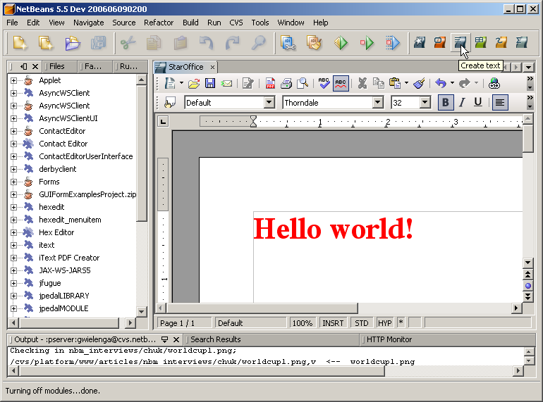
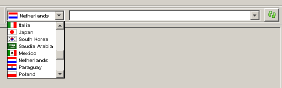
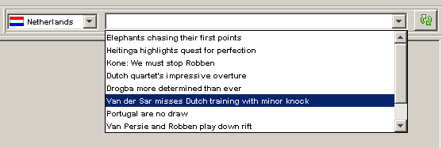

|
Chuk Munn Lee |
|
Chuk's hot links: |
NetBeans Staff met with Sun technology evangelist Chuk Munn Lee. Chuk recently wrote a module that integrates Star Office into NetBeans IDE. Here, he talks about why and how he created this module. He also talks about how Dilbert's pointy haired boss inspired him and what he learnt from Robin Williams in "Dead Poets Society". In addition, he tells us about an interesting Chinese saying...
I'm based in Singapore and have been with Sun for 10 years now. My primary role in Sun is that of a Java technology evangelist. My main responsibilities are working with individual developers and software vendors on their Java applications, helping them to architect and prototype their applications. This can be either server or desktop-based applications.
My focus for the past few years has been mostly on the Java EE side. However, lately I've been helping developers on client applications, in particular Swing-based applications. I also keep ISVs abreast of the latest developments in the Java platform area in relation to what is new and what is on the horizon. I also help develop content such as presentations, demos, and labs for SunTech Days, Sun Developer Days, and JavaOne.
Using Java with Star Office is one of the best kept secrets; it should not be so. Star Office is extremely programmable. You can, for example, create Star Office macros in Java. You can embed Star Office in a Java application. You can get a Java application to interact with a Star Office instance in a client/server fashion. Star Office has a programmatic interface call UNO which allows all these things to happen. As you probably know, NetBeans is enjoying an incredible resurgence; part of this, I believe, is due to its powerful framework, which is called the NetBeans Platform, and the NetBeans APIs that allow you to extend NetBeans in a lot of interesting and innovative ways. The NetBeans development team has also made this powerful framework incredibly easy to develop on.
So, I wanted to learn how to program Star Office and extend NetBeans, but doing two separate projects did not appeal to me. I was then reminded of one of my favourite Dilbert cartoons: Dilbert approaches his pointy haired manager and tells him that he is assigned two jobs to complete and he (Dilbert) has only time to do one. The pointy haired manager then tells him: "Combine the two and do the one". So I took the pointy haired manager's advice for once! Besides, I'm doing a lot of presentations and NetBeans demos, so it also makes perfect sense to have Star Office running in NetBeans for that 'Wow' factor.
Here's what a Star Office text document looks like in NetBeans IDE:

There is no reason why you cannot do this. Star Office can generate PDF. The module in its current form cannot do this yet. I'm still learning about NetBeans APIs. One of the things that I need to know first is how to attach an Action to a node which will invoke Star Office to convert the Java file to PDF. I'm studing Iván Rivera's Execution Profile module to understand how this is done.
However, I think that we do not need "to use a butcher's knife to slaughter a chicken" as the Chinese saying goes. If it is only PDF that you want, there are other methods to do this like the PDF converter module that Geertjan has written.
soffice -nologo -nodefault -accept=pipe,name=projects_25B7Office;urp;StarOffice.ServiceManager
OfficeBean will start an instance of Star Office in headless mode and listens for communication with clients through a named pipe. The name of the pipe is created from the user's login name, appended with '_25B7Office'. So the name is always consistent when the same users creates OfficeBean so that OfficeBean can use existing instances.
The started instance waits for communication from clients through the named pipe. OfficeBean allows you to connect to an instance of StarOffice that is running locally or on a remote machine. The module currently only connects to StarOffice instances that are running locally. If you want to start StarOffice in 'remote' mode, this is the command to do it manually:
soffice -nologo -nodefault -accept=socket,host=localhost,port=8100;urpStarOffice.ServiceManager
So, once OfficeBean has successfully started an instance of StarOffice, it then connects to this instance and requests it to create a document, load the document, and so on.
As for displaying StarOffice inside NetBeans, this is extremely simple as well. OfficeBean is an AWT Component, so once this is connected you just add it to the NetBeans API's TopComponent. Here is an example of how you do it:
final class StarOfficeWindowTopComponent extends TopComponent {
public StarOfficeWindowTopComponent() {
//Creates an instance of OfficeBean, if StarOffice has not started it.
//If StarOffice has started, connect to it.
OfficeBean officeBean = new OfficeBean();
...
//Configure the appearance of StarOffice
officeBean.setMenuBarVisible(true);
...
//Set the layout of TopComponent.
//Note that TopComponent extends JComponent.
setLayout(new BorderLayout());
add(officeBean, BorderLayout.CENTER);
...
}
That's it. It is so simple, but the effect is stunning. The StarOffice developer's
kit has a whole chapter on OfficeBean.
You can find more about OfficeBean here.
You can get the the module from this entry in my blog:
It has not been tested extensively; from my own personal experience in using it, I've not had any problems.
The biggest problem that I encountered was coaxing Star Office to start. OfficeBean loads a bunch of StarOffice native libraries. Getting these libraries to load was a problem especially on Windows machines. I work exclusively on Solaris and Linux so on these platforms, it is not a problem. However I do not have access to a Windows machine, so I have to rely on the feedback and goodwill of others.
So once I figured this out, then I was faced with how to find an elegant way to specify the path of these native libraries without having the user perform too much manual configuration. I thought that I could set the java.library.path property dynamically, but I was wrong. So, finally, I decided the best way is to get the user to configure the java.library.path in the netbeans.conf file. I really hate this solution because if you have a normal user, who does not have root or administration permission, to modify netbeans.conf file, then this user cannot use the Star Office module unless he or she installs a private copy of NetBeans.
The other bit of fun that I had was making the module independent of Star Office JARs. I did not want to to package the OfficeBean JAR, part of the StarOffice distribution, with my module. I wanted the user to specify where Star Office's installation is and then let the module load OfficeBean from there. So, I had to use ClassLoaders and reflection to do what I wanted. It wasn't that difficult once I figured out how to do this. But when I was thinking about it, I was like: "How do you get the NetBeans APIs to do this and this and this?" I was too focused on the NetBeans APIs and forgot completely about Java SE's SDK! So, how this is done is by using the JDK's URLClassLoader class. Basically, what I had to do was to create a separate class loader to load the Star Office JARs. The Star Office installation directory has to be configured by the user, in the Options window. Once this is done, I create an instance of the URLClassLoader class to load the appropriate JARs:
for (String soJar: STAROFFICE_JARS)
if (soJar.endsWith(".jar"))
urls[i++] = new URL("file:///" + so + soJar);
else
urls[i++] = new URL("file:///" + soh + soJar + separator);
loader = new URLClassLoader(urls);
Once I had created the loader, I had to load the OOoBean class and get a reference to all the methods in the OOoBean class that I was going to use. The reason is that we cannot reference OOoBean directly so everything has to go through reflection:
//Loads the OOoBean class, keep fingers crossed
obClass = Class.forName("com.sun.star.comp.beans.OOoBean", true, loader);
//Now get a reference to all the methods that we are going to use
Method[] methods = obClass.getDeclaredMethods();
for (Method m: methods)
if (m.getName().equals("loadFromURL"))
loadFromURL = m;
else if (m.getName().equals("aquireSystemWindow"))
acquireSystemWindow = m;
else if (m.getName().equals("setMenuBarVisible"))
setMenuBarVisible = m;
...
Now to create an instance of OOoBean and invoke setMenuBarVisible() method, I had to do this:
//Creates a new instance of
Object oobean = obClass.newInstance();
//invoke setMenuBarVisible(true);
setMenuBarVisible(oobean, new Object[]{ true });
The last major problem that I had was actually my own carelessness. I was creating a value object by extending the System Option class, part of the NetBeans APIs. This is to store the settings that the user enters in the Options window. Anyway, I created an entry in the layer.xml file and in the settings.xml file for persisting these values. I was tesing this for TWO DAYS but could not understand why my settings were not persisted. I was about to give up when I right-clicked on the settings.xml node in the Projects window. I noticed that there is this item called "Validate XML". So, just for the heck of it, I clicked that item... and it reported that there was an unidentifiable character in my DOCTYPE tag! Sure enough, after I corrected that, my values were saved!
Yes. In fact, Star Office for NetBeans is actually my third module. My first module was for a software vendor here in Singapore. They had an application framework which they developed in-house. I helped them to develop a module to generate the skeleton code of their framework so that they can just concentrate on the business logic. The module was based on NetBeans 3.6. AFAIK, they are still using it today. Unfortunately, they have not had the time to migrate to NetBeans 5.
My second module is based on NetBeans 5 and allows you to browse and start hands-on-lab sessions inside NetBeans. As new labs are published, you can update and display them from within NetBeans. It is a bit like the 'Java BluePrints Solutions Catalog'. The idea behind this module is to cut down the setup time when you do one of these labs. The module reads configuration information inside the lab files and sets up the environment for you before you begin the lab. For example, if you are doing a web serivces client lab and the lab requires you to deploy a web service before you begin, then the module will deploy the service before you start the lab. This is done by integrating the Rhino engine into the module. This module, though complete, has not been published. The reason is that I am still looking for a place to host the hands-on-lab content; the other reason is that I'm waiting for Mustang to be released. As you might know, Mustang will have scripting support. So, rather than relying on Rhino, I might as well wait a couple of months more and have out-of-the box scripting support.
I like customizing my working environment. NetBeans IDE already gives you lots of options to customize, but I like making NetBeans even more productive for my specific environment.
And I enjoy learning and innovating! The Star Office module was written partly because I wanted to learn about Star Office and also partly for the demos and presentations that I have to present to developers and customers. For example, I'd been following the FIFA World Cup and was cleaning up my Star Office module. I was switching between Firefox and NetBeans. Then it struck me: How difficult would it be for me to add RSS feed support inside NetBeans so that I don't have to hit Alt-Tab to switch? As it turns out, it was not really difficult at all. I now have toolbar that lets you select a country taking part in the World Cup...

...and then a related article about that country...

...and then your browser opens and displays the article! I used Rome to parse the RSS. The rest was just a rehash of the NetBeans Google Toolbar Module Tutorial.
By the way, I developed a module in the NetBeans 3.6 days, and it was not fun at all. Poring through those XML configuration files, creating the boiler plate code, etc. Now it is just a pleasure. Want an Action? Click through this wizard and NetBeans will create all the classes and the correct XML enteries for you. There are two items that I find missing but it is not really that difficult to fix... creating menu bars and creating the System Option class. Now that I know how to create these by hand, I'm actually thinking of writing a wizard to generate the classes and populate the layer.xml file for you.
Yes I have. I've been developing a game. It is currently just a bunch of Java classes, with my own simple framework for lifecycle management. I'm actually thinking of migrating this over to the NetBeans Platform. However, this will have to wait till probably the end of the year because I'm still in the middle of coding the game. So, changing the underlying infrastructure at this point will be unsettling.
Actually, I was going to say things like Matisse and the Profiler, but after thinking long and hard, I would say my absolute favourite would have to be the functionality provided by Tim Lebedkov's User Tasks module and the IDE's standard "To Do" feature (just go to Window > To Do). When I develop an application, I quickly develop the outline of the application; I then add comments like 'add listener here' or 'initialize graphics object here'. But now, with the User Tasks module, and the "To Do" feature in NetBeans, I just add a comment prefixed with TODO, then use NetBeans to scan and itemize these TODOs for me. I know it is a very simple feature, and probably most IDEs have it, but it is the one that I cannot live without.
I do have one gripe with the User Tasks module. Currently, the task list is per user. So, no matter how many projects you have, all your tasks from all your projects are stored in a single task list. It would be really nice to be able to create task lists on a per-project basis. I don't think this should be really difficult. Currently, in the configuration panel, you can specify where the task list file is located, for example >{userdir}{/}tasklist.ics. I think all you would have to do is add another macro like {projectdir}. So now you'd specify this {projectdir}{/}tasklist.ics instead. When you now create a tasklist, NetBeans would expand {projectdir} to the currently active project directory and create the tasklist.ics file there. For more information about this module, also about where to get it from, see NetBeans Edge, Issue 28.
Without a doubt a more user friendly interface to the layer.xml file, similar to the JNLP editor. Sometimes I find my module breaking because I've inadvertently changed something in the layer.xml file and I've got no clue where the error is. An editor goes a long way to help enforce some of these entries.
I know that getting developers to change their IDE is extremely difficult. I was fixated with VIM (or VI). I'm still a VIM user but NetBeans offers some things that VIM does not, such as when I'm creating a web application, NetBeans allows me to view my web application as a whole application; that is, I can jump from web.xml servlet entry to the source, while when I'm using VIM I'm jumping around from file to file. It gives you a totally different perspective.
I am a movie fan; one of the movies that I like is the movie called "Dead Poets Society". There is this scene where Robin Williams, the teacher, asks each of his students to come to the front and stand on top of the teacher's desk and to look around.
The idea is to look at something familiar from a different prespective. So I believe that using a different tool like NetBeans can give you a totally different perspective on your application and see things you never knew were there.
Of course, if, after investigating it, NetBeans does not offer anything compelling, you can always switch back to Eclipse. So at least try it!
Can't wait for NetBeans 6. I heard at JavaOne that there is going to be an enhanced editor with Jackpot integrated into the core of NetBeans IDE. Should be a great combination!
For information about creating and developing plug-in modules and rich-client applications, see the following resources: